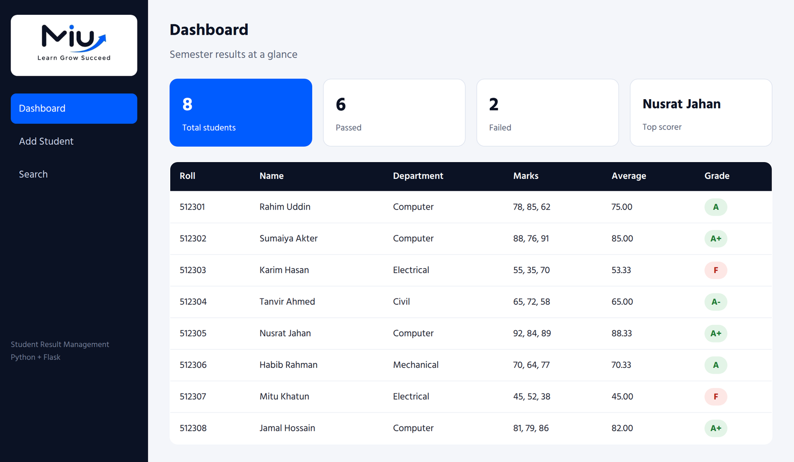
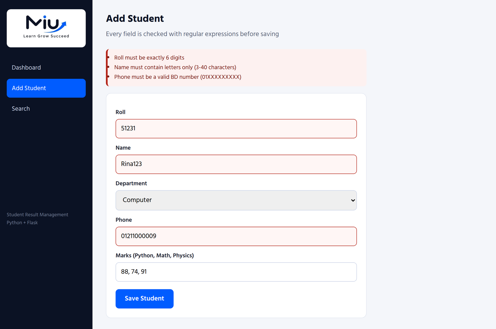
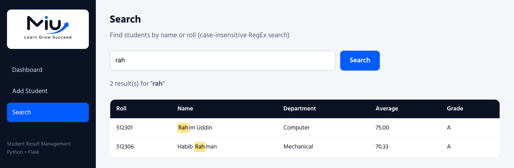
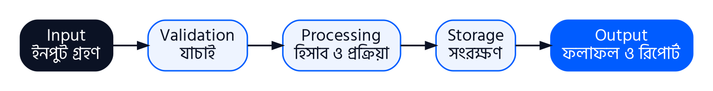

অধ্যায় ১১
Application Software
এতক্ষণ আমরা Python-এর নানা অংশ আলাদা আলাদা শিখেছি — function, file, class, exception, logging, RegEx। কিন্তু মানুষ তো function ব্যবহার করে না, ব্যবহার করে software: ফলাফল দেখার website, হিসাবের program, মোবাইল ব্যাংকিং app। এসবই application software।
এই অধ্যায়ে দেখব application software কী, কত প্রকার, এর বৈশিষ্ট্য, ব্যবহার আর কাজ। শেষে এই বইয়ে শেখা জিনিস দিয়ে বানানো একটা সত্যিকারের application software — Student Result Management System — কেমন দেখায় আর ভেতরে কীভাবে তৈরি, সেটা দেখব।
11.1 Application Software কী?
সহজ কথায়: যে software কম্পিউটার চালায় সেটা system software (Windows, Linux, Android); আর যে software দিয়ে তুমি নিজের কাজ করো সেটা application software।
| Application Software | কী কাজে লাগে |
|---|---|
| Microsoft Word / Google Docs | চিঠি, রিপোর্ট, দরখাস্ত লেখা ও সাজানো |
| Microsoft Excel | হিসাব, টেবিল, চার্ট, ফলাফল তৈরি |
| Google Chrome / Firefox | website দেখা ও ব্যবহার করা |
| VLC Media Player | ভিডিও ও গান চালানো |
| Adobe Photoshop | ছবি সম্পাদনা |
| Tally | ব্যবসার হিসাবরক্ষণ |
| AutoCAD | প্রকৌশল নকশা |
| Zoom / Google Meet | অনলাইন মিটিং ও ক্লাস |
11.2 Application Software-এর প্রকারভেদ
ব্যবহারের উদ্দেশ্য অনুযায়ী
| প্রকার | বর্ণনা | উদাহরণ |
|---|---|---|
| General Purpose | অনেক ধরনের ব্যবহারকারী অনেক কাজে ব্যবহার করে; বাজারে তৈরি অবস্থায় পাওয়া যায় | Word, Excel, Chrome, Photoshop |
| Special Purpose | একটা নির্দিষ্ট ধরনের কাজের জন্য তৈরি | বেতন হিসাব, টিকিট বুকিং, হাসপাতাল ব্যবস্থাপনা |
| Custom / Tailor-made | একটা নির্দিষ্ট প্রতিষ্ঠানের চাহিদা অনুযায়ী অর্ডার দিয়ে তৈরি | একটা কলেজের নিজস্ব ফলাফল software |
কাজের ধরন অনুযায়ী
| ধরন | উদাহরণ |
|---|---|
| Word Processing | MS Word, Google Docs |
| Spreadsheet | MS Excel, Google Sheets |
| Presentation | PowerPoint, Google Slides |
| Database Management | MS Access, MySQL |
| Graphics ও Multimedia | Photoshop, Premiere, VLC |
| Web Browser | Chrome, Firefox, Edge |
| Communication | Gmail, Zoom, messaging app |
| Education | অনলাইন কোর্স platform, শিক্ষামূলক app |
চলার জায়গা ও লাইসেন্স অনুযায়ী
- Desktop application: কম্পিউটারে install করে চালাতে হয় (MS Word, VLC)।
- Web application: browser-এ চলে, install লাগে না (Google Docs, অনলাইন ফলাফল)।
- Mobile application: মোবাইলে চলে (Android/iOS app)।
- লাইসেন্স অনুযায়ী: Proprietary (কিনতে হয়), Freeware (বিনামূল্যে, কোড বন্ধ), Open source (বিনামূল্যে, কোড উন্মুক্ত — যেমন LibreOffice, Python), Shareware (কিছুদিন বিনামূল্যে)।
11.3 Application Software-এর বৈশিষ্ট্য
একটা ভালো application software-এর সাধারণত নিচের বৈশিষ্ট্যগুলো থাকে। প্রতিটার পাশে দেখানো হয়েছে এই অধ্যায়ের শেষের প্রকল্পে (11.6) সেটা কীভাবে আছে।
| বৈশিষ্ট্য | অর্থ | প্রকল্পে উদাহরণ |
|---|---|---|
| নির্দিষ্ট উদ্দেশ্য | একটা নির্দিষ্ট সমস্যা সমাধান করে | শুধু ছাত্রের ফলাফল ব্যবস্থাপনা |
| ব্যবহারবান্ধব (User-friendly) | সহজ menu, বাটন, পরিষ্কার পর্দা — প্রশিক্ষণ ছাড়াই ব্যবহার করা যায় | বাঁ পাশে তিনটা menu, এক ক্লিকে প্রতিটা কাজ |
| নির্ভুলতা (Accuracy) | হিসাব সবসময় সঠিক | গড় ও grade স্বয়ংক্রিয়ভাবে হিসাব, unit test দিয়ে যাচাই |
| Data যাচাই | ভুল ইনপুট আটকায় | RegEx দিয়ে রোল, নাম, ফোন যাচাই |
| Data সংরক্ষণ | তথ্য স্থায়ীভাবে রাখে, আবার খুঁজে পাওয়া যায় | students.json file-এ সংরক্ষণ |
| নির্ভরযোগ্যতা (Reliability) | সমস্যা হলেও বন্ধ হয়ে যায় না | exception handling — file না থাকলেও চলে |
| নিরাপত্তা (Security) | অননুমোদিত পরিবর্তন আটকায় | মার্কস private attribute (encapsulation) |
| রেকর্ড রাখা | কী ঘটেছে তার হিসাব | app.log file-এ logging |
| দক্ষতা (Efficiency) | দ্রুত কাজ করে, কম resource নেয় | এক মুহূর্তে শত ছাত্রের ফলাফল |
| সম্প্রসারণযোগ্যতা (Scalability) | নতুন feature সহজে যোগ করা যায় | module-এ ভাগ করা কোড |
11.4 Application Software-এর ব্যবহার
| ক্ষেত্র | ব্যবহার |
|---|---|
| শিক্ষা | অনলাইন ভর্তি, ফলাফল প্রকাশ, অনলাইন ক্লাস, e-book, হাজিরা |
| ব্যবসা ও অফিস | চিঠি-রিপোর্ট, হিসাবরক্ষণ, বেতন, বিক্রয় (POS), মজুদ (inventory) |
| ব্যাংক ও আর্থিক সেবা | লেনদেন, মোবাইল ব্যাংকিং, ATM, অনলাইন বিল পরিশোধ |
| স্বাস্থ্য | রোগীর রেকর্ড, appointment, ল্যাব রিপোর্ট, telemedicine |
| সরকারি সেবা | অনলাইন আবেদন, কর, ভূমি রেকর্ড, ট্রেনের টিকিট |
| যোগাযোগ | email, video call, messaging, social media |
| প্রকৌশল | নকশা (AutoCAD), circuit simulation, 3D modeling |
| কৃষি | আবহাওয়ার তথ্য, খামার ব্যবস্থাপনা, বাজারদর জানা |
| বিনোদন | গান, ভিডিও, গেম, ছবি সম্পাদনা |
11.5 Application Software-এর কাজ
ক্ষেত্র যা-ই হোক, প্রায় সব application software ভেতরে একই মৌলিক কাজগুলো করে:
- Data Input গ্রহণ: keyboard, form, file, sensor বা অন্য software থেকে data নেওয়া।
- Data যাচাই (Validation): ইনপুট সঠিক কিনা পরীক্ষা করা — ভুল হলে ব্যবহারকারীকে জানানো।
- Data Processing: হিসাব, তুলনা, সাজানো, খোঁজা — নির্ধারিত নিয়ম অনুযায়ী data থেকে ফল তৈরি।
- Data সংরক্ষণ (Storage): তথ্য file বা database-এ স্থায়ীভাবে রাখা এবং দরকারে আবার আনা।
- Output ও Report: ফলাফল পর্দায় দেখানো, print করা, রিপোর্ট বা চার্ট তৈরি।
- কাজ স্বয়ংক্রিয় করা (Automation): বারবার করা কাজ নিজে থেকে করে সময় ও শ্রম বাঁচানো।
- নিরাপত্তা ও নিয়ন্ত্রণ: কে কী দেখতে বা বদলাতে পারবে তা নিয়ন্ত্রণ, password, অনুমতি।
- যোগাযোগ ও শেয়ার: তথ্য অন্য ব্যবহারকারী বা software-এর কাছে পাঠানো।
প্রকল্পে এই কাজগুলো এভাবে ভাগ করা: form থেকে ইনপুট (Input) → validators.py-তে RegEx যাচাই (Validation) → models.py-তে গড় ও grade হিসাব (Processing) → storage.py-তে file-এ সংরক্ষণ (Storage) → dashboard-এ টেবিল ও সারসংক্ষেপ (Output)।
11.6 প্রকল্প: Student Result Management System
এবার একটা সত্যিকারের application software দেখি, যেটা এই বইয়ে শেখা জিনিস দিয়েই তৈরি। এটা একটা web application — browser-এ খুলে ছাত্রদের ফলাফল দেখা, নতুন ছাত্র যোগ করা আর খোঁজা যায়।
কোন অংশে কোন শিক্ষা
| অংশ | যা ব্যবহার হয়েছে | কোথায় শিখেছ |
|---|---|---|
| Student class | class, constructor, private attribute, method | অধ্যায় ৪–৫ |
| validators.py | RegEx, custom exception, raise | অধ্যায় ১০ ও ৭ |
| storage.py | file read/write, JSON, try-except, logging | অধ্যায় ২, ৭ ও ৮ |
| আলাদা .py file | module ও import | অধ্যায় ৩ |
| app.py | function, list, dictionary + Flask (web framework) | অধ্যায় ১ + নতুন: Flask |
শুধু web interface-এর অংশটা (Flask) syllabus-এর বাইরে — Flask হলো Python-এ website বানানোর একটা জনপ্রিয় library। বাকি সব তুমি ইতিমধ্যে জানো।
Project-এর গঠন
srms/
|-- app.py # web pages ও route (Flask)
|-- models.py # Student class
|-- validators.py # RegEx দিয়ে ইনপুট যাচাই
|-- storage.py # JSON file-এ save / load
|-- students.json # data
|-- app.log # log file (চালালে তৈরি হয়)
|-- static/logo.png
`-- templates/ # HTML পাতা: dashboard, add, search
পর্দা ১: Dashboard

উপরে চারটা কার্ডে মোট ছাত্র, পাস, ফেল আর সর্বোচ্চ নম্বরধারী। নিচের টেবিলে প্রতিটা ছাত্রের গড় আর grade — এগুলো file-এ লেখা নেই, প্রতিবার Student class-এর average() আর grade() method হিসাব করে। কোনো বিষয়ে 40-এর কম পেলে (Karim, Mitu) গড় যা-ই হোক, grade F — লাল রঙে চিহ্নিত।
পর্দা ২: Add Student — RegEx যাচাই

এখানে ইচ্ছা করে তিনটা ভুল দেওয়া হয়েছে: রোল 5 অঙ্কের, নামে সংখ্যা, আর ফোন নম্বর 012 দিয়ে শুরু। Software data সংরক্ষণ না করে প্রতিটা ভুলের আলাদা বার্তা দেখিয়েছে এবং ভুল ঘরগুলো লাল করেছে। এটা করে নিচের module-টা:
1"""validators.py - input validation with regular expressions"""
2import re
3
4ROLL = re.compile(r"^\d{6}$")
5NAME = re.compile(r"^[A-Za-z][A-Za-z .]{2,39}$")
6PHONE = re.compile(r"^01[3-9]\d{8}$")
7
8
9class ValidationError(Exception):
10 pass
11
12
13def validate(roll, name, phone, marks_text):
14 errors = []
15 if not ROLL.fullmatch(roll):
16 errors.append("Roll must be exactly 6 digits")
17 if not NAME.fullmatch(name):
18 errors.append("Name must contain letters only (3-40 characters)")
19 if not PHONE.fullmatch(phone):
20 errors.append("Phone must be a valid BD number (01XXXXXXXXX)")
21 marks = [int(m) for m in re.findall(r"\d+", marks_text)]
22 if len(marks) != 3 or any(m > 100 for m in marks):
23 errors.append("Enter three marks between 0 and 100")
24 if errors:
25 raise ValidationError(errors)
26 return marks
লাইন-বাই-লাইন ব্যাখ্যা
| 4–6 | ROLL = re.compile(r"^\d{6}$")
NAME = re.compile(r"^[A-Za-z][A-Za-z .]{2,39}$")
PHONE = re.compile(r"^01[3-9]\d{8}$") | তিনটা pattern আগে থেকে compile করা: ঠিক 6 অঙ্কের রোল; অক্ষর দিয়ে শুরু, শুধু অক্ষর/space/বিন্দু সহ 3-40 character-এর নাম; বাংলাদেশি মোবাইল নম্বর। |
| 9–10 | class ValidationError(Exception):
pass | নিজের exception class। |
| 14–20 | errors = []
if not ROLL.fullmatch(roll):
errors.append("Roll must be exactly 6 digits")
if not NAME.fullmatch(name):
errors.append("Name must contain letters only (3-40 characters)")
if not PHONE.fullmatch(phone):
errors.append("Phone must be a valid BD number (01XXXXXXXXX)") | প্রতিটা ঘর fullmatch দিয়ে যাচাই; প্রথম ভুলেই না থেমে সব ভুল একটা list-এ জমানো, যাতে ব্যবহারকারী একবারেই সব ঠিক করতে পারে। |
| 21 | marks = [int(m) for m in re.findall(r"\d+", marks_text)] | "78, 85, 62" বা "78 85 62" — যেভাবেই লেখা হোক, findall সব সংখ্যা বের করে আনে। |
| 24–25 | if errors:
raise ValidationError(errors) | ভুল থাকলে সব বার্তাসহ exception raise; app.py সেটা except করে পর্দায় দেখায় আর log-এ WARNING লেখে। |
Module-টা web ছাড়াও আলাদাভাবে পরীক্ষা করা যায় — এটাই module-এ ভাগ করার সুবিধা:
1from validators import validate, ValidationError
2
3for data in [("512309", "Rina Akter", "01711000009", "88, 74, 91"),
4 ("51231", "Rina123", "01211000009", "88 74")]:
5 try:
6 print("Valid! Marks =", validate(*data))
7 except ValidationError as e:
8 print("Invalid:")
9 for msg in e.args[0]:
10 print(" -", msg)
Valid! Marks = [88, 74, 91] Invalid: - Roll must be exactly 6 digits - Name must contain letters only (3-40 characters) - Phone must be a valid BD number (01XXXXXXXXX) - Enter three marks between 0 and 100
লাইন-বাই-লাইন ব্যাখ্যা
| 3–4 | for data in [("512309", "Rina Akter", "01711000009", "88, 74, 91"),
("51231", "Rina123", "01211000009", "88 74")]: | একটা সঠিক আর একটা ভুল data-সেট। validate(*data) মানে tuple-এর চারটা মান চারটা argument হিসেবে পাঠানো। |
| 7–10 | except ValidationError as e:
print("Invalid:")
for msg in e.args[0]:
print(" -", msg) | exception-এর ভেতরের ভুলের list e.args[0] থেকে প্রতিটা বার্তা। |
পর্দা ৩: Search — RegEx দিয়ে খোঁজা

ছোট হাতে "rah" লেখা হয়েছে, কিন্তু "Rahim" আর "Habib Rahman" দুটোই পাওয়া গেছে, মিলে যাওয়া অংশ হলুদে চিহ্নিত। এখানে কাজ করছে 10.5-এর সেই কৌশল: re.compile(re.escape(query), re.IGNORECASE) দিয়ে pattern, আর sub() দিয়ে মিলে যাওয়া অংশ <mark> tag-এ ঘিরে দেওয়া।
নিজের কম্পিউটারে চালানো
- বইয়ের সাথে দেওয়া srms folder-টা কম্পিউটারে রাখো।
- Terminal-এ লেখো:
pip install flask(একবারই লাগবে)। - srms folder-এ গিয়ে চালাও:
python app.py - Browser-এ খোলো:
http://127.0.0.1:5000
অধ্যায়ের সারসংক্ষেপ
| বিষয় | মূল কথা |
|---|---|
| সংজ্ঞা | ব্যবহারকারীর নির্দিষ্ট কাজের software; system software-এর উপর চলে। |
| প্রকারভেদ | General purpose, special purpose, custom; desktop, web, mobile; proprietary, freeware, open source, shareware। |
| বৈশিষ্ট্য | নির্দিষ্ট উদ্দেশ্য, ব্যবহারবান্ধব, নির্ভুল, data যাচাই ও সংরক্ষণ, নির্ভরযোগ্য, নিরাপদ, দক্ষ, সম্প্রসারণযোগ্য। |
| ব্যবহার | শিক্ষা, ব্যবসা, ব্যাংক, স্বাস্থ্য, সরকারি সেবা, যোগাযোগ, প্রকৌশল, কৃষি, বিনোদন। |
| কাজ | Input → Validation → Processing → Storage → Output; সাথে automation, নিরাপত্তা, যোগাযোগ। |
অনুশীলনী · অধ্যায় ১১ (বোর্ড প্রশ্ন ও উত্তর)
এই অনুশীলনীতে অধ্যায় ১১ থেকে বিগত বছরগুলোতে বোর্ডে আসা সব প্রশ্ন, পরীক্ষার খাতায় লেখার উপযোগী উত্তরসহ দেওয়া হলো। শেষে আছে বোর্ডে এখনো সরাসরি না আসা একটি গুরুত্বপূর্ণ প্রশ্ন।
Application software-এর সংজ্ঞা ও শ্রেণিবিভাগের পূর্ণ উত্তর অনুশীলনী ৩-এ দেওয়া আছে, তাই এখানে সংক্ষেপে দেওয়া হলো; নতুন করে পূর্ণ উত্তর দেওয়া হয়েছে বৈশিষ্ট্য ও কার্যাবলির।
ক. অতি সংক্ষিপ্ত প্রশ্ন (মান: ১)
খ. সংক্ষিপ্ত প্রশ্ন (মান: ২)
গ. রচনামূলক প্রশ্ন (মান: ৬)

ঘ. অতিরিক্ত গুরুত্বপূর্ণ প্রশ্ন
| ক্ষেত্র | ব্যবহার |
|---|---|
| শিক্ষা | অনলাইন ভর্তি, ফলাফল প্রকাশ, অনলাইন ক্লাস, e-book, হাজিরা |
| অফিস ও ব্যবসা | চিঠি ও রিপোর্ট, হিসাবরক্ষণ, বেতন, বিক্রয় (POS), মজুদ ব্যবস্থাপনা |
| ব্যাংক ও আর্থিক সেবা | লেনদেন, মোবাইল ব্যাংকিং, ATM, অনলাইন বিল পরিশোধ |
| স্বাস্থ্য | রোগীর রেকর্ড, appointment, ল্যাব রিপোর্ট, telemedicine |
| সরকারি সেবা | অনলাইন আবেদন, কর, ভূমি রেকর্ড, ট্রেনের টিকিট |
| যোগাযোগ | email, video call, messaging, social media |
| প্রকৌশল | নকশা (AutoCAD), circuit simulation, 3D modeling |
| বিনোদন | গান, ভিডিও, গেম, ছবি সম্পাদনা |
এই অধ্যায় কেমন লাগল?
তোমার মতামত সরাসরি লেখকের কাছে যাবে। ভুল পেলে কোন section-এ, সেটাও লিখে দিও।